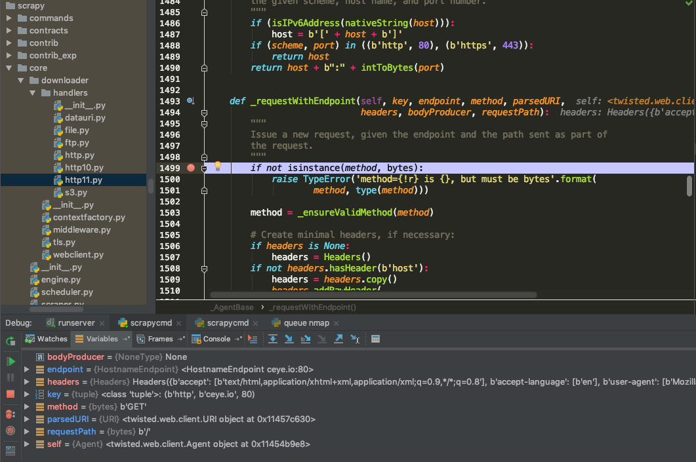
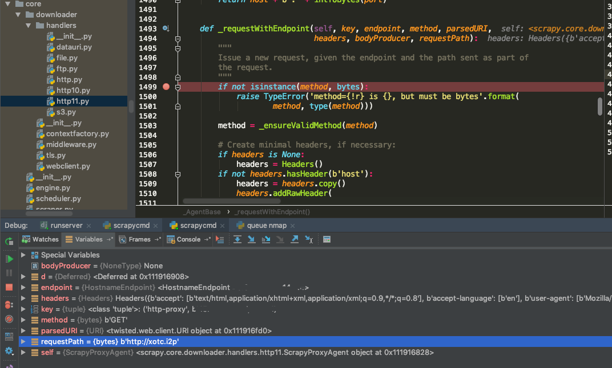

前言
当我们需要把url存入数据库时，又或者编写探测或爬虫代码的时候，需要给url的末尾加上斜杠/吗？
这里只说不带路径的url，1
2http://example.com
http://example.com/
下面这种带路径的情况在这里不做讨论，因为这是另一个关于SEO的问题1
2http://example.com/path
http://example.com/path/
先说结论：需要！下面就来谈谈为什么需要以及遇到的坑。
Scrapy 中遇到的坑
当不用代理时，url不加斜杠，即 start_urls=['http://ceye.io']，使用的agent是twisted.web.client.Agent，其中request函数实现如下1
2
3
4
5
6
7
8
9
10
11
12
13
14
15
16
17
18
19
20
21def request(self, method, uri, headers=None, bodyProducer=None):
"""
Issue a request to the server indicated by the given C{uri}.
An existing connection from the connection pool may be used or a new
one may be created.
I{HTTP} and I{HTTPS} schemes are supported in C{uri}.
@see: L{twisted.web.iweb.IAgent.request}
"""
uri = _ensureValidURI(uri.strip())
parsedURI = URI.fromBytes(uri)
try:
endpoint = self._getEndpoint(parsedURI)
except SchemeNotSupported:
return defer.fail(Failure())
key = (parsedURI.scheme, parsedURI.host, parsedURI.port)
return self._requestWithEndpoint(key, endpoint, method, parsedURI,
headers, bodyProducer,
parsedURI.originForm)

注意 parsedURI.originForm 这个值是/，response 返回正常状态码200
当使用http代理时，url不加斜杠，scrapy使用的agent是scrapy.core.downloader.handlers.http11.ScrapyProxyAgent
1 | class ScrapyProxyAgent(Agent): |

注意_requestWithEndpoint这个函数的最后一个参数值是 uri，后面不带斜杠，response 返回nginx 400 Bad Request。
那么问题来了！当我用 curl 和 python requests 使用http代理来发请求时，状态码却是200正常的。
1 | curl -I -x http://127.0.0.1:14444 http://example.i2p |
1 | In [18]: resp2=requests.get(url, headers=headers, proxies=constants.PROXIES) |
照理说scrapy也应该返回200呀。是什么造成它们之间的差异呢？答案就是斜杠/
scrapy 在使用代理发送请求时，不会带上斜杠，raw request相当于1
2GET HTTP/1.1
Host: ceye.io
而正确的写法应该是1
2GET / HTTP/1.1
Host: ceye.io
错误的路径导致nginx解析失败，返回400 Bad Request
curl 在发送时会做一层Rebuilt URL的处理，给url加上斜杠1
2
3
4
5
6
7
8
9➜ ~ curl -v -I -x http://127.0.0.1:14444 http://6y4tltjdgqwfdcz6tqwc7dxhhuradop2vejatisu64nwjzh5tuwa.b32.i2p
* Rebuilt URL to: http://6y4tltjdgqwfdcz6tqwc7dxhhuradop2vejatisu64nwjzh5tuwa.b32.i2p/
* Trying 127.0.0.1...
* TCP_NODELAY set
* Connected to 127.0.0.1 (127.0.0.1) port 14444 (#0)
> HEAD http://6y4tltjdgqwfdcz6tqwc7dxhhuradop2vejatisu64nwjzh5tuwa.b32.i2p/ HTTP/1.1
> Host: 6y4tltjdgqwfdcz6tqwc7dxhhuradop2vejatisu64nwjzh5tuwa.b32.i2p
> User-Agent: curl/7.54.0
> Accept: */*
python requests包也会做一层兼容处理，加上斜杠1
2
3
4
5In [33]: url
Out[33]: 'http://6y4tltjdgqwfdcz6tqwc7dxhhuradop2vejatisu64nwjzh5tuwa.b32.i2p'
In [34]: resp2.url
Out[34]: 'http://6y4tltjdgqwfdcz6tqwc7dxhhuradop2vejatisu64nwjzh5tuwa.b32.i2p/'
因此用 curl 和 python request 的返回结果都是正常的。
结论
为防止不确定性，建议都加上斜杠